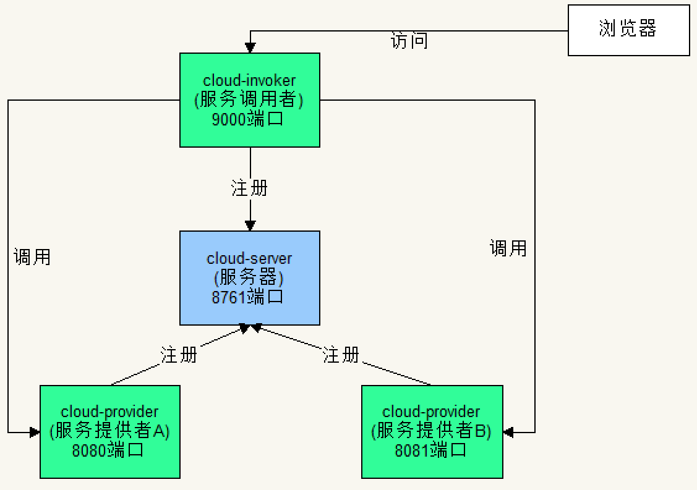

原文连接:https://www.cnblogs.com/gdjlc/p/11867358.html
Spring Cloud集成了Ribbon，结合Eureka，可实现客户端的负载均衡。
下面实现一个例子，结构下图所示。

一、服务器端
1、创建项目
开发工具：IntelliJ IDEA 2019.2.3
IDEA中创建一个新的SpringBoot项目，名称为“cloud-server”，SpringBoot版本选择2.1.10，在选择Dependencies(依赖)的界面勾选Spring Cloud Discovery ->
Eureka Server，创建完成后的pom.xml配置文件自动添加SpringCloud最新稳定版本依赖，当前为Greenwich.SR3。
pom.xml完整内容如下：


<?xml version="1.0" encoding="UTF-8"?>
<project xmlns="http://maven.apache.org/POM/4.0.0" xmlns:xsi="http://www.w3.org/2001/XMLSchema-instance"
xsi:schemaLocation="http://maven.apache.org/POM/4.0.0 https://maven.apache.org/xsd/maven-4.0.0.xsd">
<modelVersion>4.0.0</modelVersion>
<parent>
<groupId>org.springframework.boot</groupId>
<artifactId>spring-boot-starter-parent</artifactId>
<version>2.1.10.RELEASE</version>
<relativePath/> <!-- lookup parent from repository -->
</parent>
<groupId>com.example</groupId>
<artifactId>cloud-server</artifactId>
<version>0.0.1-SNAPSHOT</version>
<name>cloud-server</name>
<description>Demo project for Spring Boot</description>
<properties>
<java.version>1.8</java.version>
<spring-cloud.version>Greenwich.SR3</spring-cloud.version>
</properties>
<dependencies>
<dependency>
<groupId>org.springframework.cloud</groupId>
<artifactId>spring-cloud-starter-netflix-eureka-server</artifactId>
</dependency>
<dependency>
<groupId>org.springframework.boot</groupId>
<artifactId>spring-boot-starter-test</artifactId>
<scope>test</scope>
</dependency>
</dependencies>
<dependencyManagement>
<dependencies>
<dependency>
<groupId>org.springframework.cloud</groupId>
<artifactId>spring-cloud-dependencies</artifactId>
<version>${spring-cloud.version}</version>
<type>pom</type>
<scope>import</scope>
</dependency>
</dependencies>
</dependencyManagement>
<build>
<plugins>
<plugin>
<groupId>org.springframework.boot</groupId>
<artifactId>spring-boot-maven-plugin</artifactId>
</plugin>
</plugins>
</build>
</project>2、修改配置application.yml
server:
port: 8761
eureka:
client:
register-with-eureka: false
fetch-registry: false3、修改启动类代码CloudServerApplication.java
增加注解@EnableEurekaServer
package com.example.cloudserver;
import org.springframework.boot.SpringApplication;
import org.springframework.boot.autoconfigure.SpringBootApplication;
import org.springframework.cloud.netflix.eureka.server.EnableEurekaServer;
@SpringBootApplication
@EnableEurekaServer
public class CloudServerApplication {
public static void main(String[] args) {
SpringApplication.run(CloudServerApplication.class, args);
}
}二、服务提供者
1、创建项目
IDEA中创建一个新的SpringBoot项目，除了名称为“cloud-provider”，其它步骤和上面创建服务器端一样。
2、修改配置application.yml
spring:
application:
name: cloud-provider
eureka:
instance:
hostname: localhost
client:
serviceUrl:
defaultZone: http://localhost:8761/eureka/3、修改启动类代码CloudProviderApplication.java
增加注解@EnableEurekaClient；
让类在启动时读取控制台输入，决定使用哪个端口启动服务器；
增加一个测试用的控制器方法。
package com.example.cloudprovider;
//import org.springframework.boot.SpringApplication;
import org.springframework.boot.autoconfigure.SpringBootApplication;
import org.springframework.boot.builder.SpringApplicationBuilder;
import org.springframework.cloud.netflix.eureka.EnableEurekaClient;
import org.springframework.web.bind.annotation.RequestMapping;
import org.springframework.web.bind.annotation.RestController;
import javax.servlet.http.HttpServletRequest;
import java.util.Scanner;
@SpringBootApplication
@EnableEurekaClient
@RestController
public class CloudProviderApplication {
public static void main(String[] args) {
//SpringApplication.run(CloudProviderApplication.class, args);
Scanner scan = new Scanner(System.in);
String port = scan.nextLine();
new SpringApplicationBuilder(CloudProviderApplication.class).properties("server.port=" + port).run(args);
}
@RequestMapping("/")
public String index(HttpServletRequest request) {
return request.getRequestURL().toString();
}
}三、服务调用者
1、创建项目
IDEA中创建一个新的SpringBoot项目，除了名称为“cloud-invoker”，其它步骤和上面创建服务器端一样。
2、修改配置application.yml
server:
port: 9000
spring:
application:
name: cloud-invoker
eureka:
instance:
hostname: localhost
client:
serviceUrl:
defaultZone: http://localhost:8761/eureka/3、修改启动类代码CloudInvokerApplication.java
增加注解@EnableDiscoveryClient。
package com.example.cloudinvoker;
import org.springframework.boot.SpringApplication;
import org.springframework.boot.autoconfigure.SpringBootApplication;
import org.springframework.cloud.client.discovery.EnableDiscoveryClient;
@SpringBootApplication
@EnableDiscoveryClient
public class CloudInvokerApplication {
public static void main(String[] args) {
SpringApplication.run(CloudInvokerApplication.class, args);
}
}4、配置Ribbon有2种方式：使用代码、使用配置文件
方式一：使用代码
（1）新建一个自定义负载规则类MyRule.java
Ribbon的负载均衡器接口定义了服务器的操作，主要是用于进行服务器选择。
调用ILoadBalancer的getAllServers方法可以返回全部服务器，这里只返回第一个服务器。
package com.example.cloudinvoker;
import com.netflix.loadbalancer.ILoadBalancer;
import com.netflix.loadbalancer.IRule;
import com.netflix.loadbalancer.Server;
import java.util.List;
public class MyRule implements IRule {
private ILoadBalancer iLoadBalancer;
@Override
public Server choose(Object o) {
List<Server> servers = iLoadBalancer.getAllServers();
System.out.println("自定义服务器规则类，输出服务器信息：");
for(Server s: servers){
System.out.println(" " + s.getHostPort());
}
return servers.get(0);
}
@Override
public void setLoadBalancer(ILoadBalancer iLoadBalancer) {
this.iLoadBalancer = iLoadBalancer;
}
@Override
public ILoadBalancer getLoadBalancer() {
return this.iLoadBalancer;
}
}（2）新建一个Ping类MyPing.java
负载均衡器中提供了Ping机制，每隔一段时间去Ping服务器，判断服务器是否存活。
该工作由IPing接口的实现类负责。
package com.example.cloudinvoker;
import com.netflix.loadbalancer.IPing;
import com.netflix.loadbalancer.Server;
public class MyPing implements IPing {
@Override
public boolean isAlive(Server server) {
System.out.println("自定义Ping类，服务器信息：" + server.getHostPort() + "，状态：" + server.isAlive());
return true;
}
}（3）新建配置类MyConfig.java
package com.example.cloudinvoker.config;
import com.example.cloudinvoker.MyPing;
import com.example.cloudinvoker.MyRule;
import com.netflix.loadbalancer.IPing;
import com.netflix.loadbalancer.IRule;
import org.springframework.context.annotation.Bean;
public class MyConfig {
@Bean
public IRule getRule(){
return new MyRule();
}
@Bean
public IPing getPing(){
return new MyPing();
}
}（4）新建配置类CloudProviderConfig.java
package com.example.cloudinvoker.config;
import org.springframework.cloud.netflix.ribbon.RibbonClient;
@RibbonClient(name = "cloud-provider", configuration = MyConfig.class)
public class CloudProviderConfig {
}方式二：使用配置文件
把方式一的两个配置类注释掉，在application.yml的最后面添加下面配置
cloud-provider:
ribbon:
NFLoadBalancerRuleClassName: com.example.cloudinvoker.MyRule
NFLoadBalancerPingClassName: com.example.cloudinvoker.MyPing
listOfServers: http://localhost:8080/,http://localhost:8081/5、添加控制器 InvokerController.java
package com.example.cloudinvoker;
import org.springframework.cloud.client.loadbalancer.LoadBalanced;
import org.springframework.context.annotation.Bean;
import org.springframework.context.annotation.Configuration;
import org.springframework.http.MediaType;
import org.springframework.web.bind.annotation.RequestMapping;
import org.springframework.web.bind.annotation.RequestMethod;
import org.springframework.web.bind.annotation.RestController;
import org.springframework.web.client.RestTemplate;
@RestController
@Configuration
public class InvokerController {
@LoadBalanced
@Bean
public RestTemplate getRestTemplate(){
return new RestTemplate();
}
@RequestMapping(value="/router", method = RequestMethod.GET,produces = MediaType.APPLICATION_JSON_VALUE)
public String router(){
RestTemplate restTemplate = getRestTemplate();
//根据名称调用服务
String json = restTemplate.getForObject("http://cloud-provider/", String.class);
return json;
}
}四、测试
1、启动服务器端。
2、启动两个服务提供者，在控制台中分别输入8080和8081启动。
3、启动服务调用者。
4、浏览器访问http://localhost:9000/router，多次刷新页面，结果都是：
http://localhost:8081/服务调用者项目IDEA控制台定时输出：
自定义服务器规则类，输出服务器信息：
localhost:8081
localhost:8080
自定义Ping类，服务器信息：localhost:8081，状态：true
自定义Ping类，服务器信息：localhost:8080，状态：true